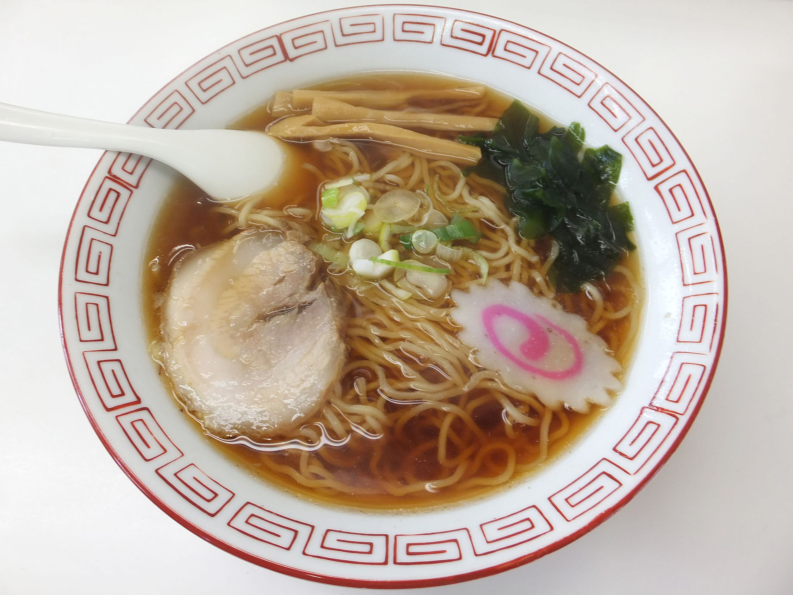

ramen
a delicious noodle soup !

don't forget, you can always add more to your ramen -> i like to add an egg ! make it how you like :]
ingredients
- 3.5 cups of vegetable broth
- 1 package of ramen noodles (usually 3.5 ounces)
- 2 teaspoons of soy sauce
- 0.5 teaspoon of chili oil
- 0.5 teaspoon of freshly minced ginger root
- 1 teaspoon sesame oil
- 2 green onions, slice them!
instructions
- In a medium saucepan combine broth and noodles. Cover and bring to a boil over high heat;
stir to break up noodles. Reduce heat to medium and add soy sauce, chili oil and ginger.
Simmer, uncovered, for 10 minutes. Stir in sesame oil and garnish with green onions
- enjoy ! it's that easy !